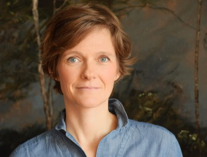
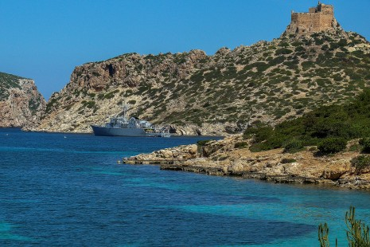
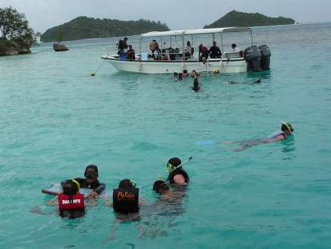
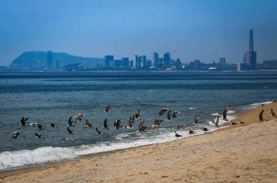
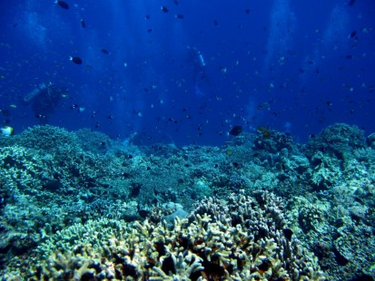
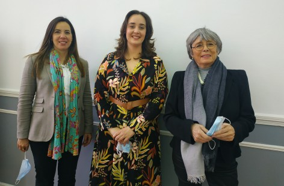
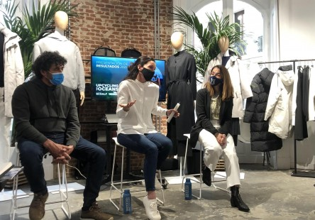
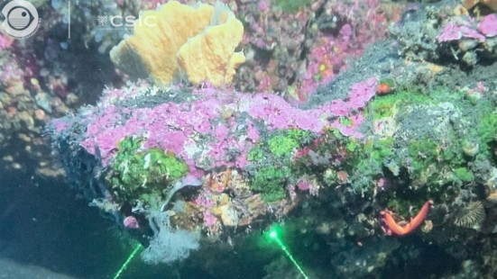

Inicio
Sobre Nosotros
Noticias
Contacto
Iniciar Sesion
Noticias

En Europa menos del 1 % de áreas marinas está protegida

Ong ecologistas exigen a España y Portugal votar por la protección de AMP

La Conferencia «Our Ocean» de Palaos cierra con más de 400 compromisos

Barcelona, capital de la economía azul al acoger el World Ocean Council

Descubren la capacidad de las bacterias marinas para degradar el mercurio

«Sin azul, no hay verde», el océano clama por su conservacióno

Un proyecto español recuperó más de 190 toneladas de residuos marinos en 2021

El «oasis de vida» en el Tagoro anticipa recuperación de fondos en La Palma